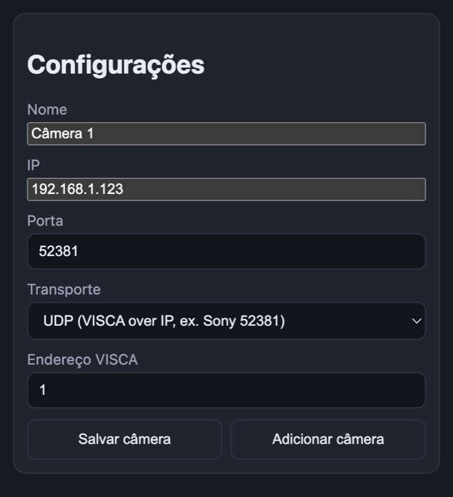
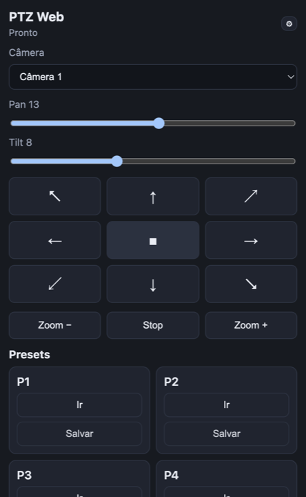

A página de download é só o começo. Depois de instalar, você abre o painel local,
aponta para a câmera VISCA e pode embutir tudo no OBS como dock lateral.
Passo 1
Baixe e abra o app
Use o instalador Setup ou o Portable acima.
No Windows, se aparecer aviso de app desconhecido, escolha
Mais informações → Executar assim mesmo.
Ao abrir, o PTZ Control sobe automaticamente em
http://127.0.0.1:8765. Mantenha o app aberto enquanto usa o painel.
Passo 2
Configure a câmera
Clique em ⚙ e preencha o IP, a porta e o transporte da câmera.
A maioria das câmeras Sony usa UDP na porta 52381; muitas genéricas
usam TCP na porta 5678.
Nome: só para identificar no seletor.
IP: endereço da câmera na rede local.
Endereço VISCA: normalmente 1.

Configurações da câmera no painel local.
Passo 3
Use o painel PTZ
O layout foi pensado para caber no dock do OBS ou no celular na mesma rede.
Segure os botões do pad para mover; solte para parar. Os presets permitem
Ir para uma posição salva ou Salvar a posição atual.
Pad direcional: pan/tilt contínuo enquanto pressionado.
Zoom +/−: zoom contínuo; Stop interrompe.
Presets P1–P8: posições rápidas da câmera.

Controles principais do PTZ Control.
Passo 4
Embuta no OBS Studio
Com o app rodando, abra o OBS e vá em
Docks → Custom Browser Docks.... Use estes valores:
Custom Browser Docks
CancelApply
O dock aparece ao lado do OBS. Se quiser controlar por tablet, deixe o app escutando
na rede e acesse http://IP-DO-PC:8765 no navegador do dispositivo.
Referência rápida de conexão
Transporte
Porta comum
Quando usar
UDP
52381
VISCA over IP (ex.: Sony)
TCP
5678
VISCA raw (ex.: câmeras genéricas)
Resumo em 3 passos
Baixe e abra o instalador (ou o portable).
Configure o IP da câmera em ⚙ (UDP 52381 ou TCP 5678).
No OBS: Docks → Custom Browser Docks →
http://127.0.0.1:8765